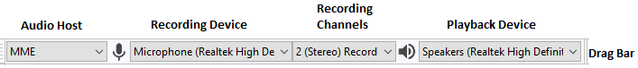
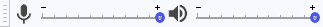
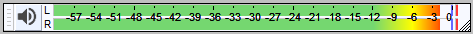
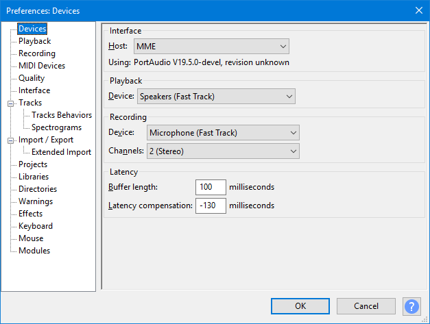

Tutorial - Selecting Your Recording Device
Now that you know you're getting sound into the computer and you've made your Audacity settings, it's time to set up your recording device.
Setting up the audio host and playback device
Device Toolbar
On the device toolbar, if you are unsure what settings to use, use MME if it is available, ALSA if on Linux and Core Audio if on Mac.
The choice of recording and play back devices may take some detective work (or trial and error). The items earlier in the list are generally built-in devices, e.g. a speaker actually in the laptop, and the later items devices that are plugged in, e.g. headphones.
The Device Toolbar, shown below, is displayed by default in a new installation of Audacity. If Device Toolbar is not visible, click on .
- 
You may want to expand the size of the Device toolbar by dragging right on the drag handle.
Choose your preferred Audio Host, Recording Device and Playback Device from the dropdown menus. This selects the particular interface with which Audacity communicates with your chosen recording and playback devices.
The "Audio Host" is the interface between Audacity and the sound device. On Windows, the choice is between the following audio interfaces.
- MME: This is the Audacity default and the most compatible with all audio devices.
- Windows DirectSound: This is more recent than MME with potentially less latency.
- Windows WASAPI: This host is the most recent Windows interface that Audacity supports. WASAPI was first officially released in 2007 in Windows Vista. WASAPI is particularly useful for "loopback" devices for recording computer playback. 24-bit recording devices are supported. Playback is emulated using this host. As a result, the playback slider in Mixer Toolbar will only scale the system playback slider's current level up or down rather than directly manipulating that system slider.
On Mac the only choice is Core Audio.
On Linux there is often only one option: ALSA. Other options could be OSS and/or Jack Audio Connection Kit (also known as "Jack" or "Jackd").
- Windows DirectSound may by default have only slightly lower latency than MME.
- Selecting Windows DirectSound or Windows WASAPI and enabling both "Exclusive Mode" boxes in Windows Sound allows Audacity to request audio direct from the device without resampling.
- For output device, choose the named sound device your headphones or speakers are connected to (not a device like Microsoft Sound Mapper that uses the system default device). If you are using a USB-connected guitar, microphone or keyboard on Windows, you may also need to reset the default system playback device to your computer sound device in order to hear audio in other applications.
| Windows computers almost always only have microphone inputs enabled by default. Earlier Windows systems may also need some inputs to be made visible before Audacity can use them. If your line-in or other inputs are not shown in Device Toolbar, go to the system mixer for Windows, show and enable the missing inputs, then use or restart Audacity. |
Click on , accept the default values in the dialog then click OK: a 30-second tone will be generated into a new track. Press Space to begin playback - you should hear a loud tone coming from your computer speakers. You can use the output slider on the Mixer Toolbar to control the volume at which you listen to your Audacity project.
- 
Note that the Playback Meter does not change as you adjust the output slider: this meter always indicate the volume of the mix of your Audacity project.
- 
Setting up the recording device
Now that you know that you can hear what Audacity is playing you can continue setting up for recording.
Choose your preferred recording device from the Recording Device dropdown menu in the Device Toolbar.
In the Recording Channels dropdown menu choose whether you want to record in mono (1 channel) or stereo (2 channels). In general if you are recording a microphone or guitar you will want to record in mono. If you are recording a keyboard and the keyboard has stereo outputs you will want to record in stereo.
Audacity Preferences
If you prefer, you can make the above settings in the Audacity's Preferences. To access this, use
The image below shows the Devices section of Preferences:
- 
There are many other settings that can be made in your Preferences do take some time to explore and understand these.
Settings
The number of different settings for recording is somewhat daunting, reflecting the many options for recording. Basically you can leave the settings at the default, and record just fine. However you might want to check this Tutorial on recording settings to find out more.Links
> Forward to: Tutorial - Making a Test Recording